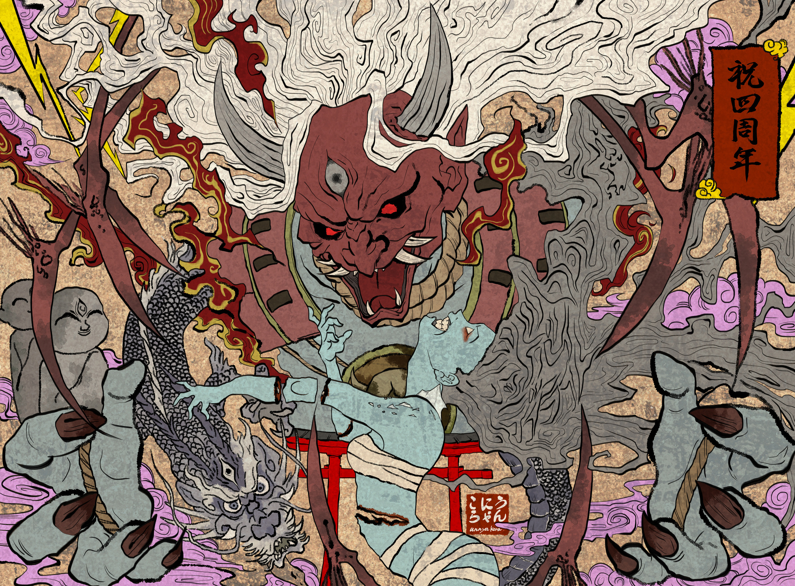

О́ни (яп. 鬼) — в японской мифологии — большие злобные клыкастые и рогатые человекоподобные ёкаи с красной, голубой или чёрной кожей, живущие в Дзигоку, японском аналоге ада.
Очень сильны и трудноубиваемы, отрубленные части тела прирастают на место. В бою используют железную палицу с шипами (канабо). Носят набедренную повязку (фундоси) из тигровой шкуры. Несмотря на свой глуповатый внешний вид, óни очень хитры и умны; могут превращаться в людей.Любят человеческое мясо. В некоторых легендах говорится, что они ненавидят сою. Считается, что люди, не контролирующие свой гнев, могут превратиться в óни. Иногда (очень редко) óни бывают добры к людям и даже служат их защитниками.

Слово «они» предположительно происходит от «он» — онъёми (китайского прочтения) иероглифа 隠, означающего прятаться или скрываться, а они первоначально представляли собой невидимых духов и богов катастроф, болезней и других бедствий. Эти туманные существа также могут принимать различные формы, чтобы обмануть (а часто и поражать) людей. Таким образом, китайский иероглиф (кит. упр. 鬼, пиньинь guǐ), означающий «призрак», стал использоваться для этих бесформенных существ.
Невидимые они в итоге стали антропоморфными и приняли современный, огроподобный облик (частично через синкретические процессы), схожий с обликом существ, перенятых из буддизма, таких как индийские ракшасы и якша, а также голодных духов, называемых гаки, и демонических прислужников Эммы, который наказывает грешников в Дзигоку (аду).
Ещё одним источником для изображения они является связанная с Китаем концепция оммёдо — древнеяпонской эзотерической космологии. Северо-восточное направление было названо Кимон (鬼门, «демонические врата»), и считалось несчастливой стороной света, откуда приходят злые духи. На основании привязки двенадцати животных Зодиака к частям света Кимон был также известен как Уситора (丑寅), или «бык и тигр», и, возможно, некоторые детали в облике они, такие как рога быка, кошачьи клыки, когти и набедренная повязка из шкуры тигра появились из этого определения.
Храмы часто строились с ориентацией на северо-восток, а у японских зданий иногда имеются Г-образные ниши с северо-восточной стороны, чтобы прогнать они прочь. В качестве примеров можно назвать Энряку-дзи, на горе Хиэй, к северо-востоку от центра Киото, и Канэи-дзи, недалеко от замка Эдо. Японская столица в VIII веке также переехала к юго-западу из Нагаокакё в Киото.
Некоторые деревни проводят ежегодные церемонии изгнания они, особенно в начале весны. В праздник Сэцубун люди бросают сою за пределы своего дома и кричат «Они-ва сото! Фуку-ва ути!» («鬼は外! 福は内!», «Они уходят! Благословения приходят!»).[4] Статуя обезьяны также предназначена для защиты от они, поскольку японское слово обезьяна, «сару», является омофоном слова «оставлять». Фольклор гласит, что для защиты от они может использоваться падуб[5]. В более поздние времена они потеряли часть своей первоначальной злобы, иногда беря на себя защитные функции. Мужчины в костюмах они часто участвуют в японских парадах, чтобы отразить любые неудачи. Японские здания иногда включают элемент с изображением лица они на черепице, называемый онигавара (яп. 鬼瓦), который, как полагают, предотвращает неудачи, так же как горгульи в западной традиции
Oни занимают видное место в японских историях о Момотаро (персиковом мальчике), Иссумбоси, и в рассказе о Смеющейся Маленькой женщине, послужившем основой для книги Arlene Mosel «The Funny Little Woman». Многие японские идиомы и пословицы также упоминают они.